implementation
Main Technologies
We used React as Frontend framework and Node.js / Express as server framework. For database, we used MySQL as our client requirements.
Essential Dependencies & Tools
Material UI
Material UI is an open-source React component library that implements Google's Material Design.
Redux
Redux is a predictable state container for JavaScript apps. It helps you write applications that behave consistently, run in different environments (client, server, and native), and are easy to test.
Axios
Axios is a promise-based HTTP Client for node.js and the browser.
Passport.js
Passport is authentication middleware for Node.js.
Joi
A powerful schema description language and data validator for JavaScript
Sequelize
Sequelize is a modern Node.js ORM for MySQL.
Overview
1. Authentication & Authorization
When a user clicks the login button on the frontend, the server verifies the user's credentials and password. Upon successful login, a token, generated using JSON Web Token (JWT), is sent back. This token serves as the sole credential allowing the user access to services within the platform.
Subsequently, each time a user accesses a service, the token in the request header undergoes validation via Passport.js in our authorization middleware. The token is authenticated based on its correctness, expiration status, existence, and match with the user's credentials.
Once the token is authenticated, user permissions are checked against the requested route. Each route is equipped with a callback function that acts as role permission verification middleware.
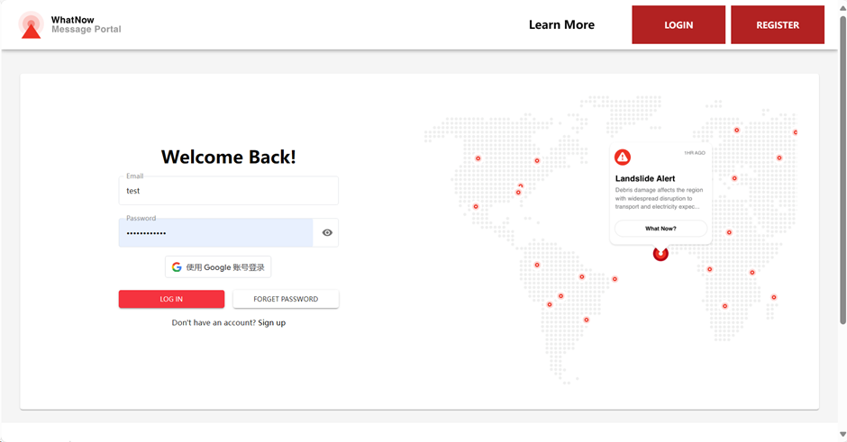 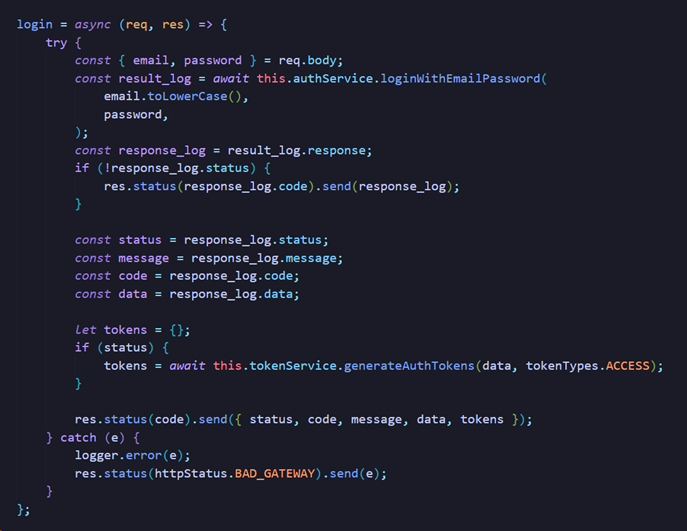 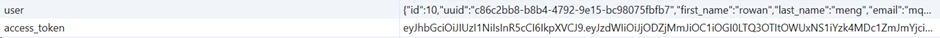 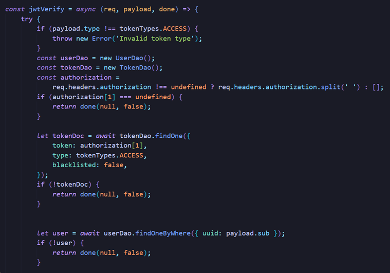 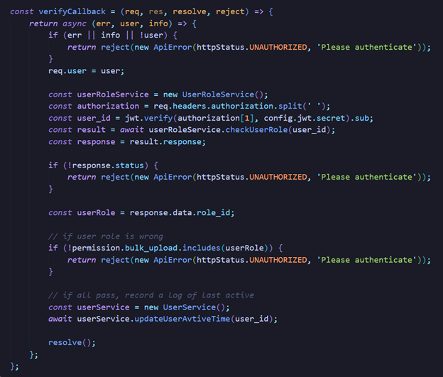2. How to improve stability
Stability is crucial for our server's operation, paralleled in importance by security. For code validation, we utilize Joi in our validator middleware to ensure that user inputs in HTTP requests are appropriate for server data processing. Invalid user inputs result in a BAD_REQUEST error response, mitigating the risks of server errors and malicious inputs, such as SQL injection.
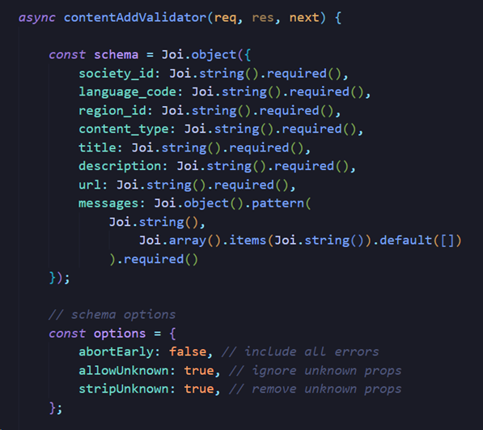3. How to keep extensibility
To maximize extensibility, beneficial for both our development team and clients, we adhere to a highly modularized structure.
Our clients can easily add new routes or services by arranging functions in a specific order. This arrangement ensures automatic connection and organization. This process is facilitated by unifying callbacks and results in each module and centralizing error handling in the Service module.
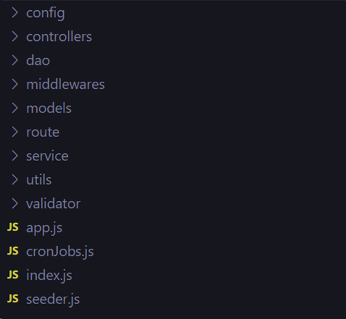 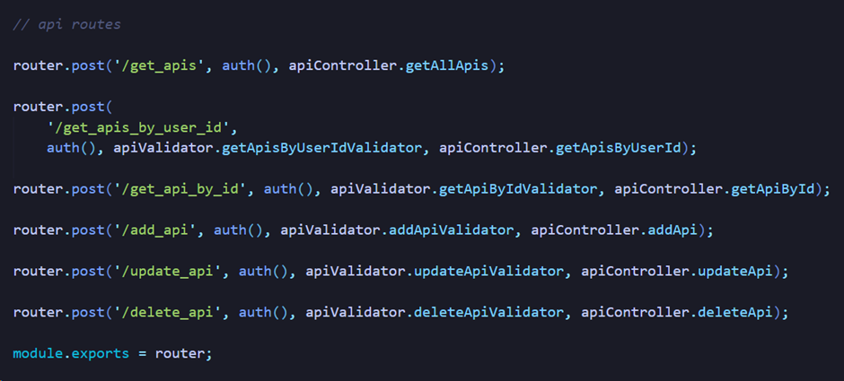4. Token management
Token management is vital for platforms requiring complex user status management. We employ a dedicated table for storing token information, distinguishing tokens by types such as access_token, verify_email_token, forget_password_token, etc. Each token has an expiration time indicating when it will expire. Tokens are user-specific, and their validity hinges on whether they are correctly matched and not blacklisted by an admin.
Regarding expired tokens, we avoid defining redundant functions for each call and route. Instead, we leverage Node-cron, a robust scheduling tool using cron syntax, to regularly check and clear expired tokens from our database.
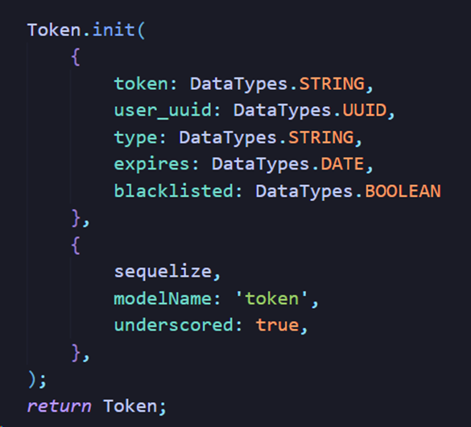 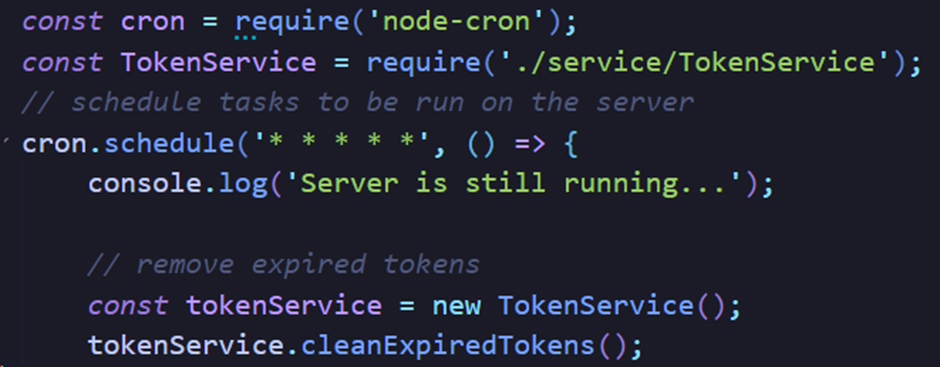5. Email verification
For actions like registration, password recovery, user verification, and activation, an email containing an activation link with an embedded token is sent upon completion. Functions that require user status changes also invoke an update to user information, followed by the email sending function. Each dispatched email generates a 'verify email' type token, embedding it into the link and saving it in the database.
When users click the activation link, a series of verification functions are triggered, including token validation based on JSON Web Token and token type received from the client. Only tokens meeting specific criteria enable a successful response, thereby activating the user's status or email.
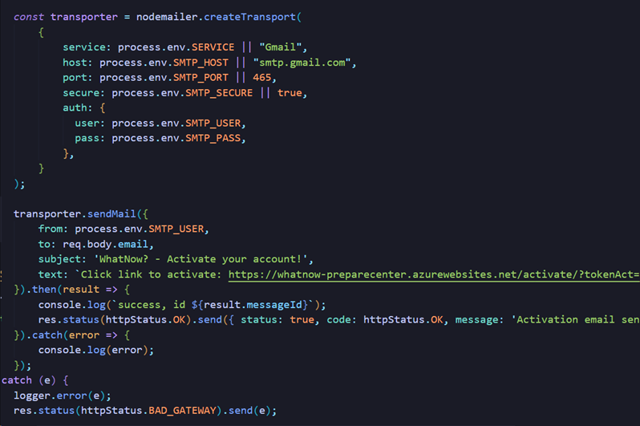 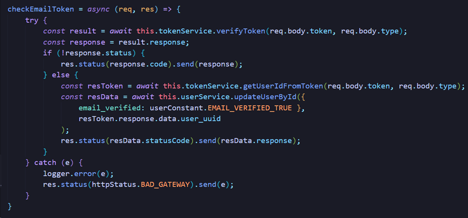 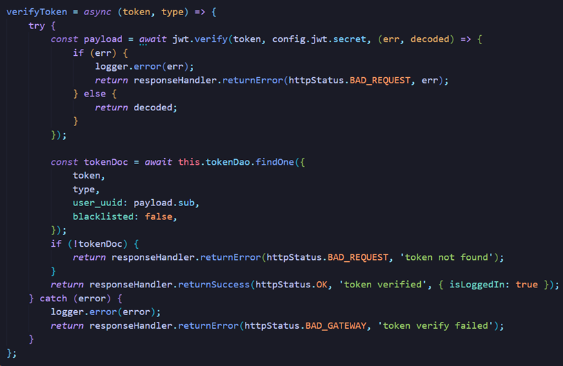6. Database maintenance
We utilize Sequelize as our Object-Relational Mapping (ORM) tool. Additionally, we've implemented a seeder.js script responsible for ensuring database initialization and the presence of essential management data.
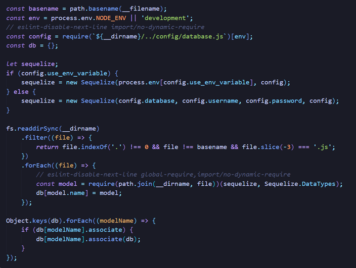 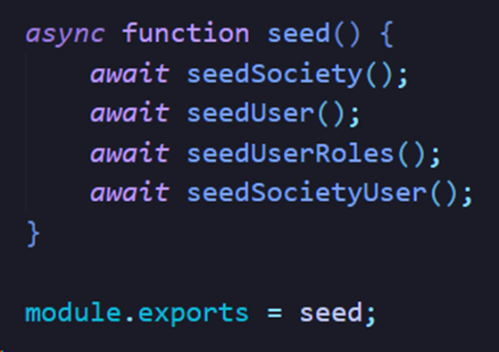7. Bulk Upload and Data export
These functions are primarily handled at the frontend. For bulk uploads, we provide several safeguards to prevent accidental data overwriting. Data is divided at the frontend, with each segment uploaded via individual route calls. For data export, we fetch all relevant data, reformatting it into a CSV file.
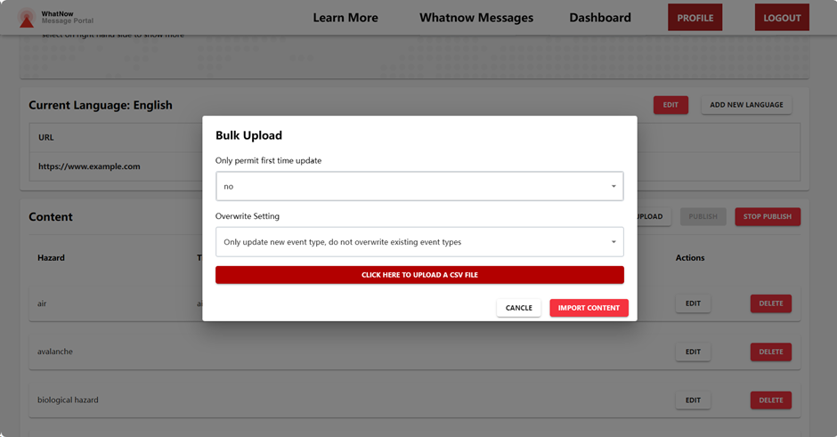 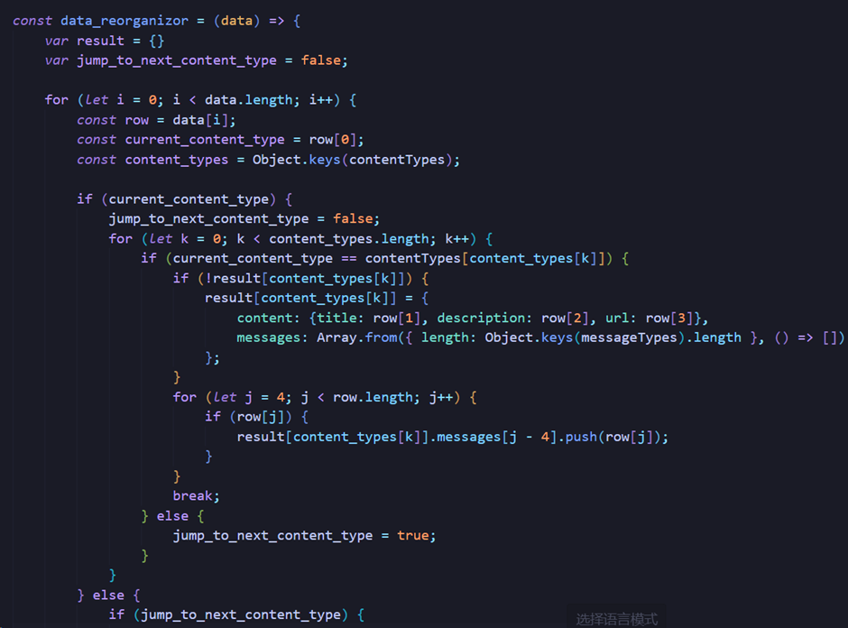 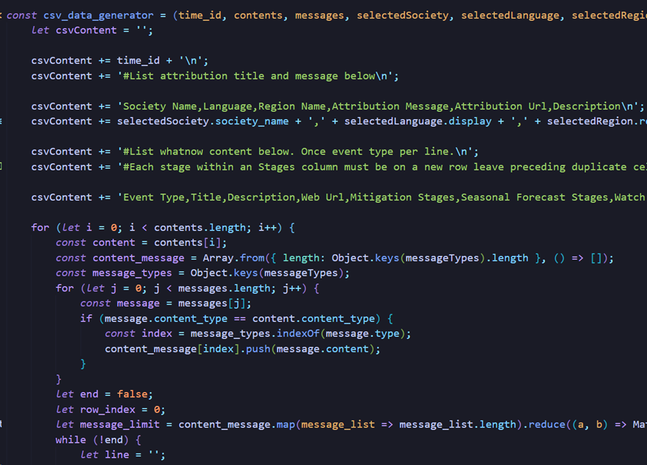8. API call
For API users, once an app key is generated, it enables access to data specific to national societies and hazard types of interest.
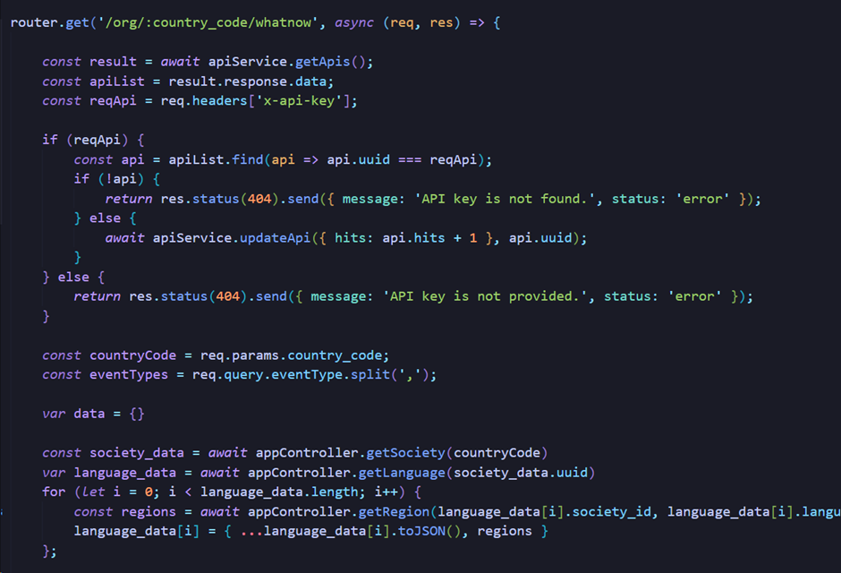